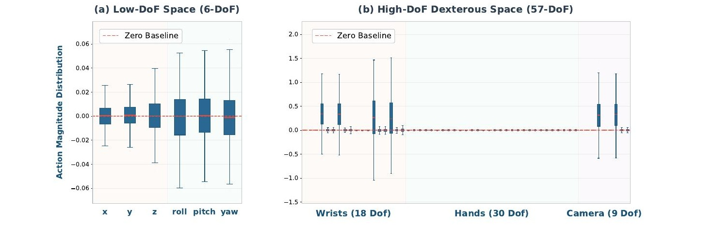
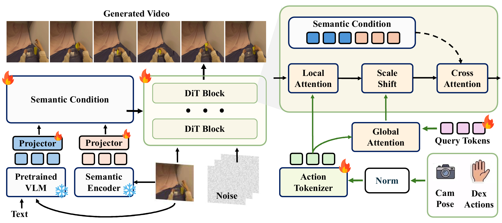
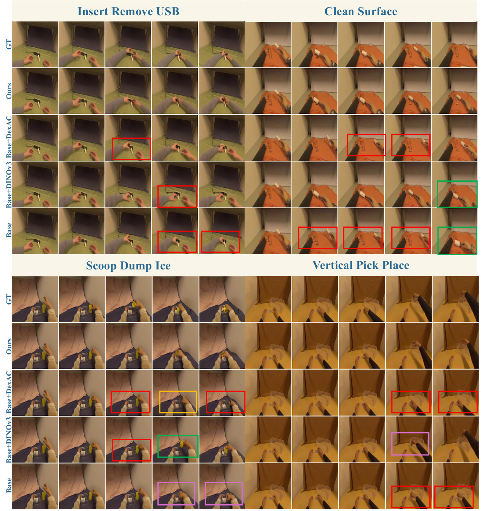
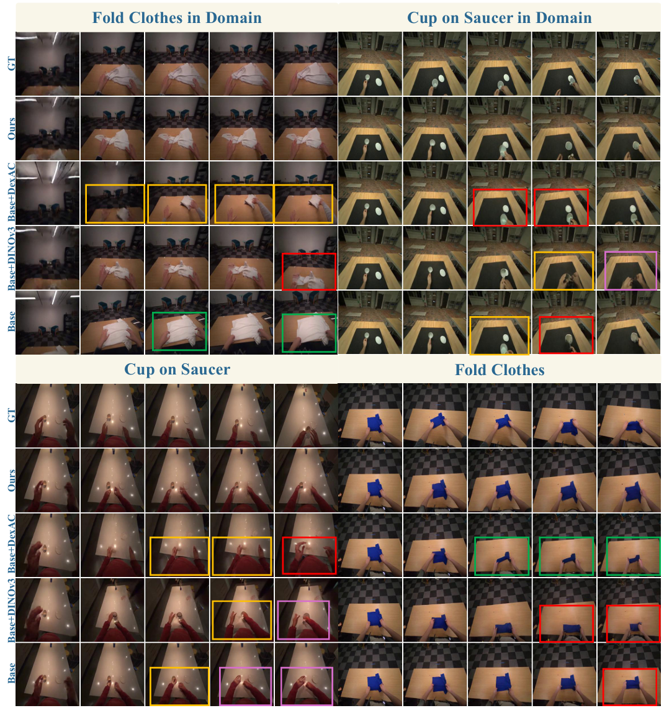
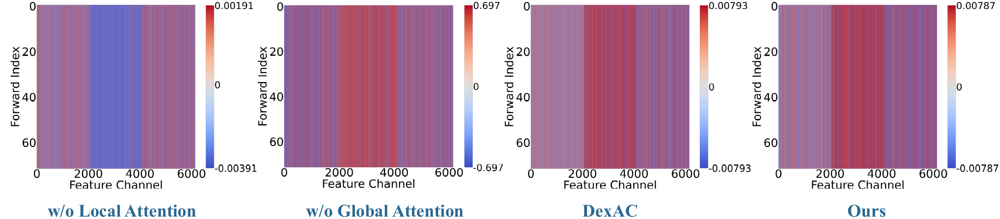

Not All Actions Are Equal:
Rethinking Conditioning for Dexterous World Model
Abstract
Recent advances in action-conditioned world models show promising progress in modeling complex interactions and forecasting future states under diverse action sequences. While these models are often driven by stronger visual representations and model capacity, action conditioning itself remains underexplored. Most existing approaches compress entire action sequence into a single representation, which works well for low-DoF control but becomes less reliable in high-DoF scenarios.We observe that high-DoF dexterous actions are inherently heterogeneous, spanning multiple orders of magnitude, where large-scale motions coexist with subtle but important signals. When uniformly aggregated, optimization exhibits an imbalance across action components, which hinders the modeling of fine-grained effects and affects action fidelity. We therefore propose DexAC, which treats action conditioning as a structured process rather than global compression. DexAC preserves dimension-level semantics via action tokenization and aligns action signals with visual dynamics through local refinement and global modulation. To address the limited high-level semantic grounding in existing world models, we further introduce a semantic branch that provides rich object-scene priors, which enables world model to capture dynamic visual details while supporting high-DoF action-conditioned video prediction. Experiments on EgoDex and EgoVerse show that combining the semantic branch with DexAC significantly improves FID, FVD and PCK, demonstrating gains in visual-temporal realism and action-following consistency. We further verify that DexAC extends to other backbones, showing the scalability of our structured action-conditioning design. These results suggest that scaling world models to high-DoF control requires both structured heterogeneous action modeling and semantic grounding.
Why Vanilla Action Conditioning Breaks at High DoF
Low-DoF gripper actions (6 dimensions) are neatly bounded: translation and rotation live at a comparable, narrow scale, so a global MLP can aggregate them without issue. Dexterous human hands are a different story — large wrist and camera motions coexist with finger articulations that are five orders of magnitude smaller.

When all 57 action dimensions are flattened into a single embedding, the high-variance wrist and camera dimensions dominate the gradient signal and effectively silence the finger articulations — the very signals needed for dexterous manipulation. This heterogeneous semantic collapse shows up directly in training: a vanilla global-conditioning baseline struggles to converge in the 57-DoF regime, while DexAC's structured conditioning stabilizes training and reaches a markedly lower loss.
Method: DexAC-WM
DexAC is built on the Cosmos-Predict2.5 backbone and replaces global compression with a structured pipeline that keeps each action dimension semantically independent throughout conditioning. Three components work together: a structured action representation, a unified local-global conditioning module, and a semantic condition branch with dual cross-attention.
Structured Action Representation
Rather than flattening the full action sequence into one vector, each action dimension is independently normalized and temporally tokenized into a structured set of (B, N, C) tokens, where each token summarizes the full temporal evolution of one action dimension. This preserves dimension-level semantics that a single global embedding would wash out.
Unified Local-Global Conditioning
A local action refinement branch injects fine-grained action tokens directly into the latent noise via cross-attention, letting every latent token query the structured action representation. A global action modulation branch summarizes the action tokens through a learnable query and injects the result through Adaptive LayerNorm, keeping overall motion temporally coherent.
Semantic Condition with Dual Cross-Attention
DINOv3-L dense spatial features and VLM text embeddings are concatenated and jointly injected into the latent space through cross-attention, with latent tokens as queries. DINO features give image-aligned spatial cues for hand-object geometry, while text embeddings provide compact, high-level intent — together improving spatio-temporal consistency.

Quantitative Results
We evaluate on EgoDex (829 hours, 194 manipulation tasks, 500 distinct objects) and EgoVerse (1,362 hours, 1,965 tasks, 240 scenes, in-the-wild). All Cosmos-based models are trained on 8 NVIDIA H200 GPUs with a 2B action-conditioned backbone. Metrics: PSNR / SSIM for pixel and structural quality, LPIPS for perceptual similarity, FID / FVD for spatial and temporal realism, and PCK@10 / PCK@20 for fine-grained and overall action consistency.
| Baseline | PSNR↑ | SSIM↑ | LPIPS↓ | FID↓ | FVD↓ | PCK@10↑ | PCK@20↑ |
|---|---|---|---|---|---|---|---|
| Wan2.1-Fun-1.3B-Control | 21.89 | 0.89 | 0.34 | 194.11 | 1532.49 | 20.35 | 36.89 |
| Wan2.2-Fun-5B-Control | 22.97 | 0.73 | 0.31 | 167.98 | 1434.19 | 21.51 | 36.84 |
| IRASim | 22.12 | 0.80 | 0.20 | 153.81 | 615.21 | 27.76 | 44.84 |
| IRASim + DexAC | 23.11 | 0.81 | 0.16 | 142.76 | 565.30 | 33.94 | 51.37 |
| Cosmos-Predict2.5-2B (Base) | 25.02 | 0.80 | 0.25 | 114.51 | 352.19 | 31.07 | 58.33 |
| Base + DINOv3 | 25.74 | 0.81 | 0.23 | 110.25 | 977.68 | 33.86 | 60.78 |
| Base + DexAC | 25.14 | 0.80 | 0.25 | 114.26 | 349.29 | 34.15 | 61.41 |
| Ours (Base + DINOv3 + DexAC) | 25.13 | 0.80 | 0.24 | 106.67 | 284.40 | 32.70 | 60.59 |
Quantitative comparison of advanced action-conditioned world models on EgoDex. Higher PSNR and SSIM indicate better reconstruction quality, while lower LPIPS, FID and FVD indicate better perceptual and temporal quality. Higher PCK represents better action consistency. The best and second-best AVG are highlighted in bold and underlined, respectively.
| Baseline | PSNR↑ | SSIM↑ | LPIPS↓ | FID↓ | FVD↓ | PCK@10↑ | PCK@20↑ |
|---|---|---|---|---|---|---|---|
| Wan2.1-Fun-1.3B-Control | 22.43 | 0.74 | 0.37 | 176.99 | 1370.18 | 20.17 | 33.95 |
| Wan2.2-Fun-5B-Control | 21.93 | 0.79 | 0.41 | 151.97 | 1203.89 | 25.74 | 41.32 |
| IRASim | 22.59 | 0.71 | 0.35 | 229.74 | 989.21 | 41.68 | 57.90 |
| IRASim + DexAC | 23.66 | 0.75 | 0.39 | 224.77 | 963.25 | 44.68 | 58.12 |
| Cosmos-Predict2.5-2B (Base) | 21.45 | 0.63 | 0.39 | 151.62 | 955.74 | 24.58 | 41.16 |
| Base + DINOv3 | 21.09 | 0.62 | 0.41 | 162.13 | 857.82 | 26.45 | 41.73 |
| Base + DexAC | 21.37 | 0.63 | 0.40 | 152.10 | 919.56 | 24.24 | 42.72 |
| Ours (Base + DINOv3 + DexAC) | 21.67 | 0.64 | 0.38 | 139.60 | 830.03 | 40.62 | 60.51 |
Quantitative comparison of advanced action-conditioned world models on EgoVerse. Higher PSNR and SSIM indicate better reconstruction quality, while lower LPIPS, FID and FVD indicate better perceptual and temporal quality. Higher PCK represents better action consistency. The best and second-best AVG are highlighted in bold and underlined, respectively.
| Metric | w/o Local Attention | w/o Global Attention | MLP Action Embed | Full DexAC |
|---|---|---|---|---|
| PSNR↑ | 25.12 | 24.82 | 25.02 | 25.13 |
| SSIM↑ | 0.80 | 0.79 | 0.80 | 0.80 |
| LPIPS↓ | 0.25 | 0.26 | 0.25 | 0.24 |
| FID↓ | 114.51 | 116.31 | 114.51 | 106.67 |
| FVD↓ | 377.03 | 419.90 | 352.19 | 284.40 |
| PCK@10↑ | 30.48 | 30.81 | 31.07 | 32.70 |
| PCK@20↑ | 58.50 | 54.21 | 58.33 | 60.59 |
| Method | Wrist PCK@10 | Wrist PCK@20 | Finger PCK@10 | Finger PCK@20 | Head PCK@10 | Head PCK@20 |
|---|---|---|---|---|---|---|
| MLP Action Embed | 7.03 | 31.80 | 7.03 | 22.51 | 3.89 | 14.27 |
| w/o Global Attention | 88.83 | 93.76 | 0 | 0 | 0 | 0 |
| w/o Local Attention | 48.88 | 72.60 | 29.03 | 53.87 | 35.75 | 56.03 |
| DexAC | 33.04 | 58.42 | 33.04 | 58.42 | 40.00 | 60.99 |
| DexAC + DINOv3 | 54.65 | 76.09 | 29.68 | 54.44 | 41.21 | 65.51 |
Qualitative Results
Across both datasets, the Cosmos base model produces reasonable reconstructions but suffers from temporal inconsistencies such as drifting hand positions and unstable object interactions. Adding DINOv3 alone improves visual sharpness but introduces flickering and inconsistent motion trajectories. DexAC alone generates more temporally stable sequences with hand trajectories that align more closely with intended actions. The full model combines both properties, yielding sharper yet stable outputs with reduced motion jitter and more accurate long-horizon interaction dynamics.


Why Structured Conditioning Helps
To verify that subtle action dimensions are effectively utilized, we extract the action-conditioned embedding before AdaLN modulation and compute channel-wise activation magnitudes, forming a feature heatmap across four settings: without local attention, without global attention, DexAC, and our full model (DINOv3 + DexAC).



BibTeX
@article{yuan2026dexac,
title = {Not All Actions Are Equal: Rethinking Conditioning for Dexterous World Model},
author = {Yuan, Zizhao and Liang, Zhengtu and Wang, Taowen and Liang, Qiwei and Wang, Yichi
and Wang, Yunheng and Fang, Yuetong and Li, Lusong and Zeng, Zecui and Xu, Renjing},
journal = {arXiv preprint},
year = {2026},
url = {https://dexac-world-model.github.io}
}